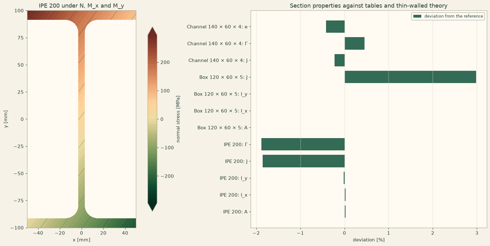

Docs › Examples › Cross-section properties of standard steel beams
Beam sections · 2D
Cross-section properties of standard steel beams
Area, second moments, torsion constant, shear centre and warping constant of an IPE 200, a welded box and a lipless channel, and the normal stress of a combined load.
Run locally with OneSimulation. The example downloads are free. Running them requires an activated runtime. Runtime Alpha 0.2.1a7 · CPython 3.13 on macOS (Apple Silicon), Ubuntu 22.04 (x86-64), and Windows x64. Installation and activation · View pilot plans. Scope of the reference checks.

What it computes
OneSimulation cuts the three cross-sections from STEP prisms, meshes them with quadratic triangles and computes area and second moments by integration and the Saint-Venant warping function on the quadratic space, from which the torsion constant, the shear centre and the warping constant follow. The script that builds the STEP files comes with the notebook.
What it checks
IPE 200 against the section table: A, I_y and I_z within 0.03 %, J and Γ within 1.9 %; box against exact formulas within 0.001 % and against Bredt's thin-walled J +3 %; channel shear centre, J and Γ within 0.5 % of thin-walled theory; torsional shear in the IPE flanges 6.18 against 6.20 MPa.
The notebook
The complete notebook, cell by cell. Run it to produce the figures and the comparison printout.
Beam and frame models need a handful of numbers per cross-section: the area \(A\), the second moments \(I\), the torsion constant \(J\), the position of the shear centre and, for open sections, the warping constant \(\Gamma\). Area and second moments are plain integrals over the section. Torsion and shear centre need the Saint-Venant warping function \(\omega\), the solution of
with \(J=\int\big|\nabla\omega+(-y,x)\big|^2\,dA\). The shear centre is the point about which the warping function is orthogonal to \(x\) and \(y\); the warping constant is \(\Gamma=\int\omega_s^2\,dA\) of the warping function about it. All of them follow from one 2D finite-element solution.
Setup. Three sections: an IPE 200 (\(h=200\) mm, \(b=100\) mm, \(t_w=5.6\) mm, \(t_f=8.5\) mm, root radius 12 mm), a welded box 120 × 60 × 5 mm with sharp corners and a lipless channel 140 × 60 mm with 4 mm walls. Each comes as a short prism from its own CAD file, beam_section_properties_<name>.step, written by beam_section_properties_geometry.py with the CAD objects of OneSimulation; the computation uses the mid-plane section. A combined load on the IPE 200: normal force \(N=100\) kN, bending moments \(M_x=30\) kN m (strong axis) and \(M_y=3\) kN m, torque \(T=50\) N m.
Reference. IPE 200: the section table of EN 10365 / the producer's catalogue, \(A=28.48\) cm², \(I_y=1943\) cm⁴, \(I_z=142.4\) cm⁴, \(I_t=6.98\) cm⁴, \(I_w=12\,990\) cm⁶. Box: exact \(A\) and \(I\) of two rectangles; Bredt's thin-walled torsion constant \(J=4A_m^2t/s\) with the area \(A_m\) and perimeter \(s\) of the wall centre line. Channel: thin-walled theory with centre-line dimensions \(b\), \(h\) (Timoshenko and Gere, Theory of Elastic Stability; Pilkey, Formulas for Stress, Strain, and Structural Matrices): \(e=3b^2/(6b+h)\) from the web, \(J=(2b+h)t^3/3\) and \(\Gamma=t\,b^3h^2(3b+2h)/\big(12(6b+h)\big)\).
import numpy as np
from onesim.cad.exchange import load
from onesim.meshing import TriangularMesher
from onesim.physics.solid_mechanics import section_properties
from onesim.visualization import plots, theme
theme.set()Geometry and mesh
load returns each prism; section cuts its mid-plane. Quadratic triangles of 1.5 mm.
names = ["ipe", "box", "channel"]
parts = {name: load(f"beam_section_properties_{name}.step") for name in names}
sections = {
name: part.section((0, 0, 1), origin=(0, 0, part.size[2] / 2))
for name, part in parts.items()
}
meshes = {
name: TriangularMesher(target_size=0.0015).generate(section)
for name, section in sections.items()
}
titles = {
"ipe": "IPE 200",
"box": "Box 120 × 60 × 5",
"channel": "Channel 140 × 60 × 4",
}
fig = plots.figure(2, 3, size=(17, 10))
for k, name in enumerate(names):
plots.geometry(
parts[name],
labels=False,
camera=plots.Camera(elevation=60, azimuth=-70),
title=f"{titles[name]} (short prism)",
ax=fig[k],
)
plots.mesh(
meshes[name],
groups=("all",),
legend=False,
title=f"Section: {meshes[name].cell_count} quadratic triangles",
ax=fig[3 + k],
)
plots.show()Section properties
section_properties integrates area and second moments on the mesh and solves the warping function on the quadratic space.
props = {name: section_properties(mesh) for name, mesh in meshes.items()}Comparison with tables and thin-walled theory
For each section the computed values next to the reference; for the channel the shear centre is measured from the centre line of the web.
t, b, h = 0.004, 0.058, 0.136
references = {
"ipe": {
"A [cm²]": 28.48,
"I_x [cm⁴]": 1943.0,
"I_y [cm⁴]": 142.4,
"J [cm⁴]": 6.98,
"Γ [cm⁶]": 12990.0,
},
"box": {
"A [cm²]": 17.0,
"I_x [cm⁴]": (0.120 * 0.060**3 - 0.110 * 0.050**3) / 12 * 1e8,
"I_y [cm⁴]": (0.060 * 0.120**3 - 0.050 * 0.110**3) / 12 * 1e8,
"J [cm⁴]": 4 * (0.115 * 0.055) ** 2 * 0.005 / (2 * (0.115 + 0.055)) * 1e8,
},
"channel": {
"J [cm⁴]": (2 * b + h) * t**3 / 3 * 1e8,
"Γ [cm⁶]": t * b**3 * h**2 * (3 * b + 2 * h) / (12 * (6 * b + h)) * 1e12,
"e [mm]": 3 * b**2 / (6 * b + h) * 1e3,
},
}
computed = {
name: {
"A [cm²]": p.area * 1e4,
"I_x [cm⁴]": p.second_moments[0] * 1e8,
"I_y [cm⁴]": p.second_moments[1] * 1e8,
"J [cm⁴]": p.torsion_constant * 1e8,
"Γ [cm⁶]": p.warping_constant * 1e12,
"e [mm]": (0.002 - p.shear_centre[0]) * 1e3,
}
for name, p in props.items()
}
for name in names:
print(
f"{titles[name]}: centroid ({1e3 * props[name].centroid[0]:.2f}, {1e3 * props[name].centroid[1]:.2f}) mm, "
f"shear centre ({1e3 * props[name].shear_centre[0]:.2f}, {1e3 * props[name].shear_centre[1]:.2f}) mm"
)
for quantity, reference in references[name].items():
print(
f" {quantity:10s} computed {computed[name][quantity]:12.4g} reference {reference:12.4g} {100 * (computed[name][quantity] / reference - 1):+7.2f} %"
)Stresses in the IPE 200
The normal stress of the combined load over the section and its extreme value, and the largest torsional shear stress from the warping solution against the thin-walled estimate \(\tau=T\,t_f/J\) in the flange.
ipe = props["ipe"]
nodes = meshes["ipe"].coordinates
sigma = ipe.normal_stress(nodes, normal_force=100e3, bending_moments=(30e3, 3e3))
corner = ipe.normal_stress(
[[-0.050, 0.100]], normal_force=100e3, bending_moments=(30e3, 3e3)
)[0]
shear = np.linalg.norm(ipe.torsion_shear(50.0), axis=1)
print(
f"normal stress: {sigma.min() / 1e6:.1f} to {sigma.max() / 1e6:.1f} MPa; at the flange tip (-50, 100) mm {corner / 1e6:.1f} MPa "
f"(N/A + M_x h/2I_x + M_y b/2I_y with the table values: {(100e3 / 28.48e-4 + 30e3 * 0.1 / 1943e-8 + 3e3 * 0.05 / 142.4e-8) / 1e6:.1f} MPa)"
)
flange = (np.abs(ipe.points[:, 0]) > 0.030) & (np.abs(ipe.points[:, 0]) < 0.040)
print(
f"torsional shear in the flanges 30-40 mm from the web: up to {shear[flange].max() / 1e6:.2f} MPa, thin-walled estimate "
f"{50.0 * 0.0085 / ipe.torsion_constant / 1e6:.2f} MPa; largest {shear.max() / 1e6:.2f} MPa at ({1e3 * ipe.points[np.argmax(shear), 0]:.1f}, "
f"{1e3 * ipe.points[np.argmax(shear), 1]:.1f}) mm, where web, fillet and flange meet"
)Figure
Left the normal stress over the IPE 200 for the combined load; the neutral axis is inclined because of the weak-axis moment. Right the deviation of the computed properties of all three sections from their references; the larger deviations are those of the thin-walled formulas.
ratios = {
f"{titles[name]}: {quantity.split()[0]}": computed[name][quantity] / reference
for name in names
for quantity, reference in references[name].items()
}
fig = plots.figure(1, 2, size=(17, 7))
plots.heatmap(
nodes[:, 0] * 1e3,
nodes[:, 1] * 1e3,
sigma / 1e6,
triangles=np.asarray(meshes["ipe"].cells),
contours=12,
centre=0.0,
label="normal stress [MPa]",
xlabel="x [mm]",
ylabel="y [mm]",
title="IPE 200 under N, M_x and M_y",
ax=fig[0],
)
plots.bars(
list(ratios),
{"deviation from the reference": [100 * (value - 1) for value in ratios.values()]},
horizontal=True,
ylabel="deviation [%]",
title="Section properties against tables and thin-walled theory",
ax=fig[1],
)
plots.show()Going further
Feed the computed values into FrameMember(area=..., bending_inertia_y=..., torsion_constant=..., shear_centre=...) for a frame model, add a second material as a separate region for a composite section, or cut the section from any imported beam profile.